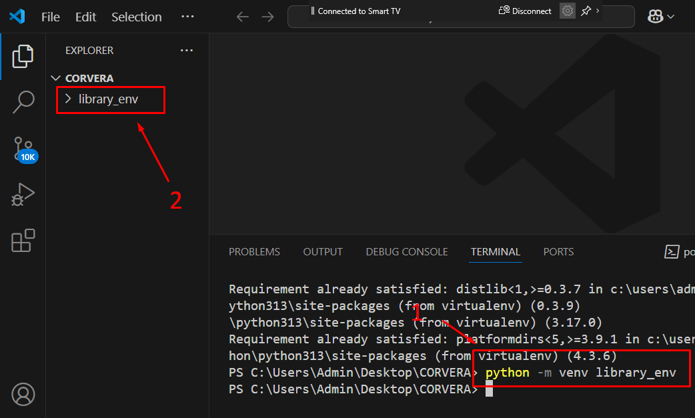
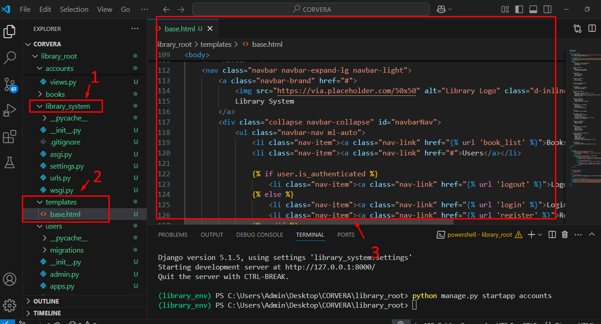

LAB MANUAL USING DJANGO
Laboratory Activity No. 1:
Laboratory Activity No. 1:
Topic: Introduction to Software Design, History, and Overview
Title: Setting Up the Development Environment for Django Project
Introduction: This activity will guide you through the process of setting up your development environment to start building the Library Management System (LMS) in Django. The process involves installing necessary software, setting up Python and Django, and verifying the installation.
Objectives:
- Install Python and Django on your system.
- Create a virtual environment to manage dependencies.
- Verify the installation by running a simple Django project.
Theory and Detailed Discussion: To develop the Library Management System, we will use the Django framework. Django is a high-level Python web framework that allows developers to create robust web applications quickly and efficiently. Before we can start developing, we need to set up the development environment.
Materials, Software, and Libraries:
- Python (version 3.8 or above)
- Django (version 4.0 or above)
- pip (Python package manager)
- Text Editor (Visual Studio Code or PyCharm)
- Database (SQLite – comes with Django by default)
Time Frame: 1 Hour
Procedure:
- Install Python:
- Go to python.org and download the latest version of Python.
- Install Python by following the installation instructions for your operating system.
- Install pip (Python package installer):
- Open a terminal and
- type the following command:
- Install Virtual Environment:
python -m ensurepip --upgrade
3. Create folder using your family name as the file name and Open in Visual Studio Code.
In desktop create (family_name) folder
(family_name) folder
Open the folder
Right Click on the folder white space then Open with Code
Or
Open Visual Studio Code
> File > Open Folder >
Select your folder
Or
In Terminal
Change directory to the folder then type
Code .
- Create a virtual environment for our project to avoid conflicts with global packages.
- If the terminal is not yet open. Click the View>Terminal in VSCode then type
pip install virtualenv
- Create a new virtual environment:
python -m venv library_env

- Activate the virtual environment:
- On Windows:
.\library_env\Scripts\activate
- On Mac/Linux:
source library_env/bin/activate
If error in virtual environment activation
Open windows Powershell by running as Administrator
Type the following code:
PS C:\Windows\system32> get-executionpolicy
Restricted
If restricted type the code:
PS C:\Windows\system32> set-executionpolicy remotesigned
Then type again the
.\library_env\Scripts\activate
- Install Django:
- After activating the virtual environment, install Django by running:
- Verify the Django Installation:
- Run the following command to verify if Django is installed:
- Create a New Django Project:
- Create a new Django project called "library_system":
- Rename library_system to library_root
pip install django
django-admin --version
django-admin startproject library_system
The Tree View Directory should look like this:
library_root > library_system
- Navigate into the project directory:
cd library_root
- Run the Django Development Server:
- Start the development server to verify everything is working:
python manage.py runserver
- Open a browser and go to http://127.0.0.1:8000/. You should see the Django welcome page.
Program/Code: The code here is focused on setting up the environment. The following commands should be run in the terminal:
python -m venv library_env
source library_env/bin/activate # or .\library_env\Scripts\activate on Windows
pip install django
django-admin startproject library_system
cd library_system
python manage.py runserver
Results: (print screen the result and provide the github link of your work)
Follow-Up Questions:
- What is the role of a virtual environment in Django development?
- What are the advantages of using Django for web development over other frameworks?
Findings:
Summary:
Conclusion:
Laboratory Activity No. 2:
Laboratory Activity No. 2:
Topic belongs to: Software Design and Database Systems
Title: Designing the Database Schema for the Library Management System
Introduction: In this activity, you will design the database schema for the Library Management System. The database will include tables for books, authors, users, and borrowing records. You will also learn how to use Django’s ORM (Object-Relational Mapping) to define the models.
Objectives:
- Design the database schema for the Library Management System.
- Create Django models to represent the schema.
- Use Django’s ORM to interact with the database.
Theory and Detailed Discussion: Django uses an ORM (Object-Relational Mapping) system to map Python objects to database tables. By defining models in Python code, Django automatically creates the corresponding database tables. We will start by designing the database schema with the necessary relationships between entities like books, authors, and users.
Materials, Software, and Libraries:
- Django framework
- SQLite database (default in Django)
Time Frame: 2 Hours
Procedure:
- Create Django Apps:
- In Django, an app is a module that handles a specific functionality. To keep things modular, we will create two apps: one for managing books and another for managing users.
- Make sure that your are inside the library_root directory
- Open the books/models.py file and define the following models:
- Define Models for the Users App:
- Open the users/models.py file and define the following models:
- Apply Migrations:
- To create the database tables based on the models, run the following commands:
- Create Superuser for Admin Panel:
- Create a superuser to access the Django admin panel:
- Register Models in Admin Panel:
- In books/admin.py, register the Author and Book models:
- In users/admin.py, register the User and BorrowRecord models:
- Run the Development Server:
- Start the server again to access the Django admin panel:
- Access Admin Panel:
python manage.py startapp books
python manage.py startapp users
2. Register the Apps in Settings.py
Under library_root directory open library_system>settings.py then add the books and users application under the INSTALLED_APPS
3. Define Models for the Books App:
from django.db import models
class Author(models.Model):
name = models.CharField(max_length=100)
birth_date = models.DateField()
def __str__(self):
return self.name
class Book(models.Model):
title = models.CharField(max_length=200)
author = models.ForeignKey(Author, on_delete=models.CASCADE)
isbn = models.CharField(max_length=13)
publish_date = models.DateField()
def __str__(self):
return self.title
from django.db import models
from books.models import Book
class User(models.Model):
username = models.CharField(max_length=100)
email = models.EmailField()
def __str__(self):
return self.username
class BorrowRecord(models.Model):
user = models.ForeignKey(User, on_delete=models.CASCADE)
book = models.ForeignKey(Book, on_delete=models.CASCADE)
borrow_date = models.DateField()
return_date = models.DateField(null=True, blank=True)
python manage.py makemigrations
python manage.py migrate
python manage.py createsuperuser
Note: The password won’t show when you type it.
from django.contrib import admin
from .models import Author, Book
admin.site.register(Author)
admin.site.register(Book)
from django.contrib import admin
from .models import User, BorrowRecord
admin.site.register(User)
admin.site.register(BorrowRecord)
python manage.py runserver
- Open a browser and go to http://127.0.0.1:8000/admin and log in using the superuser credentials. You should see the Author, Book, User, and BorrowRecord models.
Django Program or Code: Write down the summary of the code for models that has been provided in this activity.
Results: By the end of this activity, you will have successfully defined the database schema using Django models, created the corresponding database tables, and registered the models in the admin panel. (print screen the result and provide the github link of your work)
Follow-Up Questions:
- What is the purpose of using ForeignKey in Django models?
- How does Django’s ORM simplify database interaction?
Findings:
Summary:
Conclusion:
Laboratory Activity No. 3:
Topic belongs to: Programming Constructs and Paradigms
Title: Implementing CRUD Operations for Books and Users in the Library Management System
Introduction:
This activity involves implementing CRUD (Create, Read, Update, Delete) operations for books and users in the Library Management System. You will create views and forms to handle these operations via a web interface.
Objectives:
- Create views for CRUD operations.
- Use Django forms to manage user input.
- Learn about Django’s URL routing for view handling.
Theory and Detailed Discussion:
CRUD operations are the fundamental actions in any database-driven application. Django's views and forms make it easy to manage the interaction between the user and the database. Using Django’s URL routing system, we can map different actions (like creating or updating data) to specific views.
Materials, Software, and Libraries:
- Django Framework
- SQLite (or any database you are using)
Time Frame:
2 hours
Step by Step Procedure:
- Create views for handling CRUD operations:
- Open books/views.py and add the following views:
- Create a BookForm in books/forms.py:
from django.shortcuts import render, redirect
from .models import Book
from .forms import BookForm
def book_list(request):
books = Book.objects.all()
return render(request, 'books/book_list.html', {'books': books})
def book_create(request):
if request.method == 'POST':
form = BookForm(request.POST)
if form.is_valid():
form.save()
return redirect('book_list')
else:
form = BookForm()
return render(request, 'books/book_form.html', {'form': form})
def book_update(request, pk):
book = Book.objects.get(pk=pk)
if request.method == 'POST':
form = BookForm(request.POST, instance=book)
if form.is_valid():
form.save()
return redirect('book_list')
else:
form = BookForm(instance=book)
return render(request, 'books/book_form.html', {'form': form})
def book_delete(request, pk):
book = Book.objects.get(pk=pk)
if request.method == 'POST':
book.delete()
return redirect('book_list')
return render(request, 'books/book_confirm_delete.html', {'book': book})

Create first the forms.py then inside of it past the code.
from django import forms
from .models import Book
class BookForm(forms.ModelForm):
class Meta:
model = Book
fields = ['title', 'author', 'isbn', 'publish_date']
- Define the URLs for the views in books/urls.py:
Under the urls.py
from django.urls import path
from . import views
urlpatterns = [
path('', views.book_list, name='book_list'),
path('create/', views.book_create, name='book_create'),
path('update/<int:pk>/', views.book_update, name='book_update'),
path('delete/<int:pk>/', views.book_delete, name='book_delete'),
]

- Register the URLs in library_system/urls.py:
from django.contrib import admin
from django.urls import path, include
urlpatterns = [
path('admin/', admin.site.urls),
path('books/', include('books.urls')),
]
- Create the HTML templates (book_list.html, book_form.html, book_confirm_delete.html) to render the CRUD forms.
Inside the books (1) create new folder named templates (3). Inside the templates(3) create a folder books (4).
Changes here.
#book_list.html
{% extends 'base.html' %}
{% block content %}
<div class="row">
<div class="col-md-12">
<h2 class="mb-4">Books List</h2>
<a href="{% url 'book_create' %}" class="btn btn-primary mb-3">Add New Book</a>
<!-- Table -->
<table class="table table-bordered table-striped">
<thead>
<tr>
<th>Title</th>
<th>Author</th>
<th>ISBN</th>
<th>Publish Date</th>
<th>Actions</th>
</tr>
</thead>
<tbody>
{% for book in books %}
<tr>
<td>{{ book.title }}</td>
<td>{{ book.author.name }}</td>
<td>{{ book.isbn }}</td>
<td>{{ book.publish_date }}</td>
<td>
<a href="{% url 'book_update' book.id %}" class="btn btn-warning btn-edit">Edit</a>
<a href="{% url 'book_delete' book.id %}" class="btn btn-danger btn-delete">Delete</a>
</td>
</tr>
{% endfor %}
</tbody>
</table>
</div>
</div>
{% endblock %}
#book_form.html
{% extends 'base.html' %}
{% block content %}
<div class="row">
<div class="col-md-6 offset-md-3">
<h2 class="mb-4">{{ form.instance.id|yesno:"Edit Book,Add New Book" }}</h2>
<form method="post">
{% csrf_token %}
{{ form.as_p }}
<button type="submit" class="btn btn-primary">{{ form.instance.id|yesno:"Save Changes,Add Book" }}</button>
</form>
</div>
</div>
{% endblock %}
# book_confirm_delete.html
{% extends 'base.html' %}
{% block content %}
<div class="row">
<div class="col-md-6 offset-md-3">
<h2>Are you sure you want to delete "{{ book.title }}"?</h2>
<form method="post">
{% csrf_token %}
<button type="submit" class="btn btn-danger">Yes, Delete</button>
<a href="{% url 'book_list' %}" class="btn btn-secondary">Cancel</a>
</form>
</div>
</div>
{% endblock %}
6. Register the templates directory to the Settings template directory

Django Program or Code:
Code for views, forms, and URL patterns has been provided above.
Results:
The user can now view the list of books, add new books, update existing books, and delete books.
Follow-Up Questions:
- How do Django forms work with models for CRUD operations?
- What is the role of the redirect() function in Django views?
Findings:
Students can perform CRUD operations for books and users.
Summary:
This activity allows students to implement and interact with the core database of the Library Management System.
Conclusion:
CRUD functionality is essential for any web application, and students now have the ability to manage books in the system.
Making an Accounts
Adding accounts
Step 1: Create a New App Called accounts
In your project directory, run:
This will create a new app named accounts. Now, we will move all the authentication-related logic and templates into this app.
Step 2: Add accounts to INSTALLED_APPS
Next, open your settings.py file and add the accounts app to the INSTALLED_APPS list:
INSTALLED_APPS = [
# other apps...
'accounts',
]

Step 3: Set Up URLs in accounts/urls.py
Inside the accounts app, create a urls.py file to handle user authentication routes. Here's how to structure it:
from django.urls import path
from . import views
from django.contrib.auth import views as auth_views
urlpatterns = [
path('register/', views.register, name='register'),
path('login/', auth_views.LoginView.as_view(template_name='accounts/login.html'), name='login'),
path('logout/', auth_views.LogoutView.as_view(), name='logout'),
]
accounts/urls.py:
Here:
- register/: The route for registering users.
- login/: The route for logging in users (using Django's built-in login view).
- logout/: The route for logging out users (using Django's built-in logout view).
Step 4: Create the Registration View in accounts/views.py
Now, create the view for user registration in the views.py file of the accounts app.
from django.shortcuts import render, redirect
from django.contrib.auth.forms import UserCreationForm
from django.contrib.auth import login
def register(request):
if request.method == 'POST':
form = UserCreationForm(request.POST)
if form.is_valid():
user = form.save()
login(request, user) # Log the user in after successful registration
return redirect('book_list') # Redirect to books list after registering
else:
form = UserCreationForm()
return render(request, 'accounts/register.html', {'form': form})
accounts/views.py:

This register view:
- Uses Django's built-in UserCreationForm to handle user registration.
- If the form is valid, it logs in the user and redirects them to the book_list page.
Step 5: Create Templates for Registration and Login
Create the templates for registration and login inside the accounts/templates/accounts/ folder.
{% extends 'base.html' %}
{% block content %}
<div class="login-register">
<h3 class="mb-4">Register</h3>
<form method="post">
{% csrf_token %}
{{ form.as_p }}
<button type="submit" class="btn btn-primary">Register</button>
</form>
<p class="mt-3">Already have an account? <a href="{% url 'login' %}">Login here</a></p>
</div>
{% endblock %}
accounts/templates/accounts/register.html:
This template allows users to register by submitting the form.
accounts/templates/accounts/login.html:
{% extends 'base.html' %}
{% block content %}
<div class="login-register">
<h3 class="mb-4">Login</h3>
<form method="post">
{% csrf_token %}
{{ form.as_p }}
<button type="submit" class="btn btn-success">Login</button>
</form>
<p class="mt-3">Don't have an account? <a href="{% url 'register' %}">Register here</a></p>
</div>
{% endblock %}
This template handles user login.
Step 6: Update Main urls.py to Include Accounts URLs
In your main project’s urls.py (the one in the root of your project), include the accounts app URLs:
from django.contrib import admin
from django.urls import path, include
urlpatterns = [
path('admin/', admin.site.urls),
path('accounts/', include('accounts.urls')), # Include accounts app URLs
path('books/', include('books.urls')),
path('users/', include('users.urls')),
]
project/urls.py (root level):
Step 7: Update base.html with Login, Logout, and Register Links
Update your base.html to include links for login, logout, and register. Use {% url 'login' %}, {% url 'logout' %}, and {% url 'register' %} to dynamically link to the correct pages.
<nav class="navbar navbar-expand-lg navbar-light">
<a class="navbar-brand" href="#">
<img src="https://via.placeholder.com/50x50" alt="Library Logo" class="d-inline-block align-top">
Library System
</a>
<div class="collapse navbar-collapse" id="navbarNav">
<ul class="navbar-nav ml-auto">
<li class="nav-item"><a class="nav-link" href="{% url 'book_list' %}">Books</a></li>
<li class="nav-item"><a class="nav-link" href="#">Users</a></li>
{% if user.is_authenticated %}
<li class="nav-item"><a class="nav-link" href="{% url 'logout' %}">Logout</a></li>
{% else %}
<li class="nav-item"><a class="nav-link" href="{% url 'login' %}">Login</a></li>
<li class="nav-item"><a class="nav-link" href="{% url 'register' %}">Register</a></li>
{% endif %}
</ul>
</div>
</nav>

Step 8: Update Settings for Redirects
Don't forget to add settings in settings.py to handle post-login and post-logout redirects:
LOGIN_REDIRECT_URL = 'book_list' # Redirect to books list after login
LOGOUT_REDIRECT_URL = 'login' # Redirect to login page after logout
Step 9: Migrate the Database
Since you're using Django's built-in User model, run the following command to ensure the authentication tables are set up correctly:
python manage.py makemigrations
python manage.py migrate
Step 10: Run the Server
Finally, run your server:
Now, you can visit:
- /accounts/register/ to register users.
- /accounts/login/ to log in users.
- /accounts/logout/ to log out users.
Laboratory Activity No. 8:
Topic belongs to: Problem-Solving Strategies
Title: Implementing Search Functionality for Books
Introduction:
In this activity, you will implement a search functionality that allows users to search for books by title, author, or ISBN. This will involve creating a search view and integrating it into the web interface.
Objectives:
- Implement search functionality for books.
- Learn to filter querysets in Django based on user input.
Theory and Detailed Discussion:
Searching is one of the most common operations in any web application. Django allows you to filter querysets using its ORM (Object-Relational Mapping). By capturing user input and filtering the database, we can dynamically display search results based on the search criteria.
Materials, Software, and Libraries:
- Django Framework
- SQLite (or any other database you are using)
Time Frame:
1.5 hours
Step by Step Procedure:
- Create a search form in books/forms.py:
python
Copy code
from django import forms
class SearchForm(forms.Form):
query = forms.CharField(max_length=100)
- Create a view in books/views.py to handle the search:
python
Copy code
from django.shortcuts import render
from .models import Book
from .forms import SearchForm
def search_books(request):
query = request.GET.get('query', '')
books = Book.objects.filter(title__icontains=query) | Book.objects.filter(author__icontains=query)
return render(request, 'books/search_results.html', {'books': books, 'query': query})
- Add a URL pattern for the search view in books/urls.py:
python
Copy code
urlpatterns = [
...
path('search/', views.search_books, name='search_books'),
]
- Create the search results template search_results.html:
html
Copy code
<h2>Search Results for "{{ query }}"</h2>
<ul>
{% for book in books %}
<li>{{ book.title }} by {{ book.author }}</li>
{% empty %}
<li>No books found.</li>
{% endfor %}
</ul>
- Add a search form to your homepage template to make the search accessible.
Django Program or Code:
Code for the search form, view, and template is provided above.
Results:
Users can search for books by title or author, and the results are displayed on a separate page.
Follow-Up Questions:
- What is the difference between icontains and contains in Django queries?
- How would you optimize the search for a large database?
Findings:
Search functionality is successfully implemented, allowing users to find books easily.
Summary:
The search feature improves the usability of the Library Management System by enabling users to search for books based on different criteria.
Conclusion:
The system now includes the ability to search books by title or author.